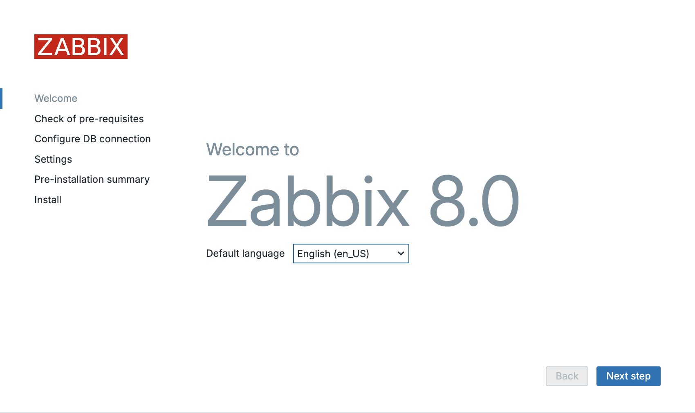
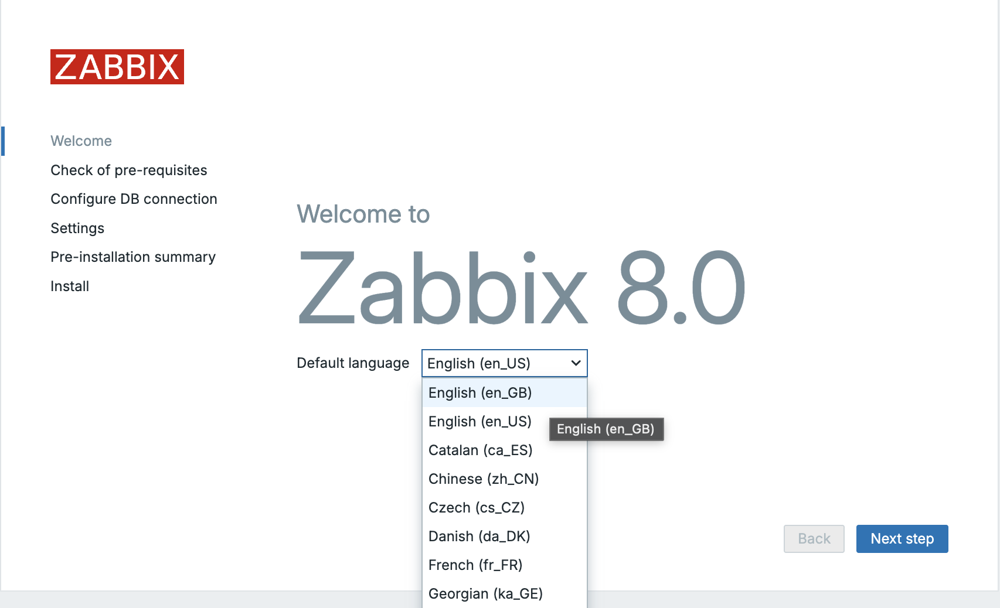
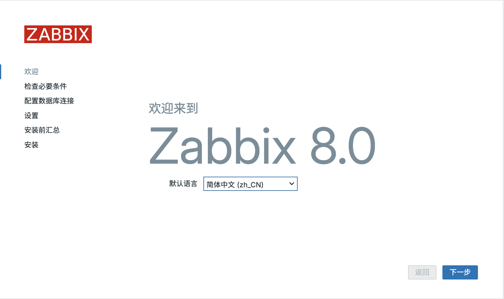
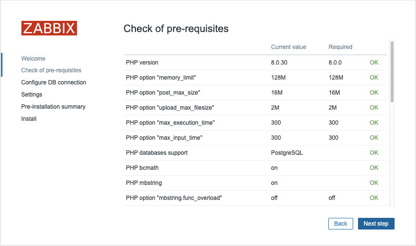
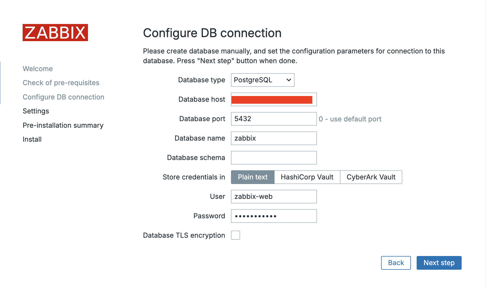
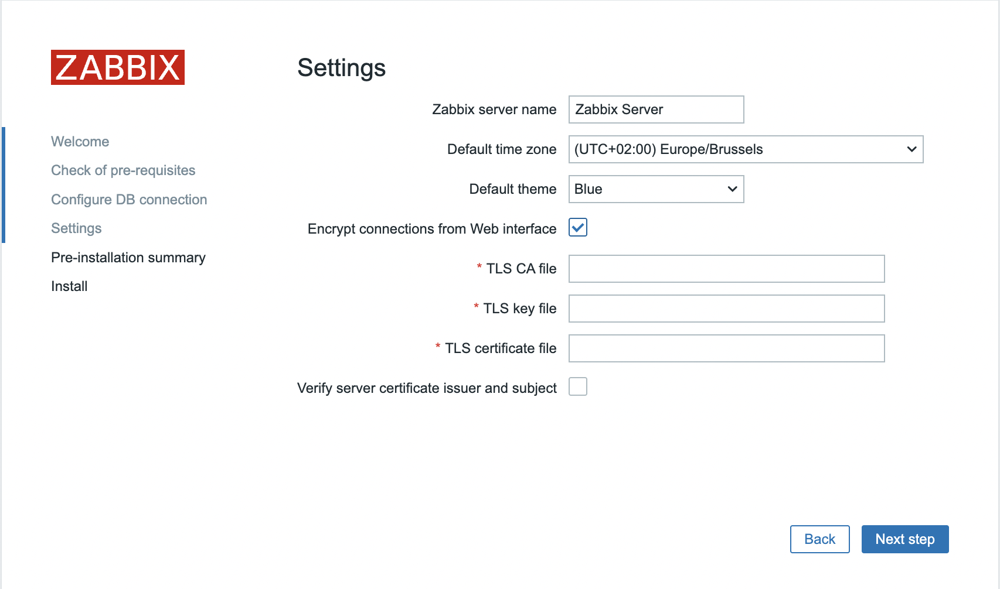
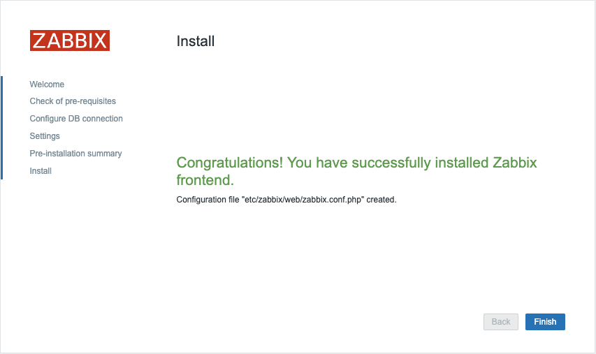
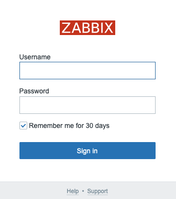

Frontend installeren
Voordat je de Zabbix frontend configureert, moet je ervoor zorgen dat het systeem voldoet aan de vereisten en is voorbereid zoals beschreven in het vorige hoofdstuk: Aan de slag. Deze server kan dezelfde zijn waarop eerder de Zabbix serverpakketten zijn geïnstalleerd, of het kan een aparte machine zijn.
Voer alle volgende stappen uit op de server die is aangewezen voor de frontend.
Frontend installeren met NGINX
Frontend-pakketten installeren
Red Hat
# List all available PHP modules and enable PHP 8.2
dnf module list php -y
dnf module enable php:8.2
# When using MySQL/MariaDB
dnf install zabbix-nginx-conf zabbix-web-mysql
# or when using PostgreSQL
dnf install zabbix-nginx-conf zabbix-web-pgsql
# When using MySQL/MariaDB
zypper install zabbix-nginx-conf zabbix-web-mysql php8-openssl php8-xmlreader php8-xmlwriter
# or when using PostgreSQL
zypper install zabbix-nginx-conf zabbix-web-pgsql php8-openssl php8-xmlreader php8-xmlwriter
SUSE Linux Enterprise Server
Zorg er op SUSE Linux Enterprise Server (SLES) voor dat je geabonneerd bent op
de repository "SUSE Linux Enterprise Module Web and Scripting". Die biedt
toegang tot de PHP 8-pakketten die nodig zijn voor de installatie van de
Zabbix frontend. Op SLES-versies ouder dan 16 gebruik je SUSEConnect
in plaats van suseconnect.
Ubuntu
Deze commando's installeren de Zabbix frontend-pakketten en de benodigde afhankelijkheden voor NGINX.
Vanaf SUSE 16 is SELinux de standaardbeveiligingsmodule in plaats van AppArmor. Standaard kan SELinux op SUSE verhinderen dat PHP-FPM uitvoerbaar geheugen toewijst voor PHP JIT-compilatie, verbinding maakt met de Zabbix server of via TCP verbinding maakt met de databaseserver. Sta deze acties toe met:
SELinux: benodigde rechten voor PHP-FPM inschakelen
Tip
Installeer bij SELinux-problemen bij voorkeur het pakket setroubleshoot.
Dit registreert SELinux-weigeringen in het systeemlog en geeft suggesties
om de problemen op te lossen.
Afhankelijk van de standaardinstellingen van je Linux-distributie kan systemd
verhinderen dat PHP-FPM naar de directory /etc/zabbix/web schrijft. Die
schrijftoegang is nodig tijdens de installatie van de Zabbix frontend. Maak
daarom een drop-in-bestand aan om dit toe te staan:
Systemd: PHP-FPM toestaan te schrijven naar /etc/zabbix/web
Hiermee open je een editor om het drop-in-bestand /etc/systemd/system/php-fpm.service.d/override.conf aan te maken. Dit bestand vult de bestaande serviceconfiguratie aan of overschrijft onderdelen ervan.
Voeg de volgende regels toe:
Sluit daarna de editor en laad de systemd-configuratie opnieuw:
Hoe verhindert systemd dat PHP-FPM naar /etc/zabbix/web schrijft?
Op veel moderne Linux-distributies gebruikt systemd sandboxing om de rechten
van services te beperken. Zo krijgen services alleen toegang tot de middelen
die ze nodig hebben. PHP-FPM kan daardoor standaard geen schrijfrechten
hebben op bepaalde directories, waaronder /etc/zabbix/web.
De systemd-directives ProtectSystem en ReadWritePaths regelen deze toegang.
Tip
Schrijftoegang tot /etc/zabbix/web is normaal alleen nodig tijdens de
eerste installatie van de Zabbix frontend. Na de installatie kun je het
drop-in-bestand verwijderen om de beveiliging verder aan te scherpen.
Eerst passen we de NGINX-configuratie aan, zodat de standaardconfiguratie niet langer poort 80 gebruikt en de Zabbix frontend die poort kan overnemen.
Op Ubuntu hoef je nginx.conf niet aan te passen. Voer daar alleen
sudo unlink /etc/nginx/sites-enabled/default uit.
Zoek in dit configuratiebestand het blok dat begint met server {:
Oorspronkelijke configuratie
Tip
Dit blok kan verschillen naargelang je distributie en NGINX-versie.
Zet vervolgens de listen- en server_name-directives in commentaar om
de standaard HTTP-serverconfiguratie uit te schakelen. Plaats daarvoor een
# aan het begin van de regels, zoals hieronder:
Pas nu het NGINX-configuratiebestand van Zabbix aan, zodat de frontend poort 80 gebruikt. Open het volgende bestand:
Pas de volgende regels aan:
Oorspronkelijke configuratie
Verwijder de # voor de eerste twee regels en vul de juiste poort en
domeinnaam voor je Zabbix frontend in.
Tip
Als je geen domeinnaam hebt, kun je voor server_name de waarde _
gebruiken, zoals in het voorbeeld hieronder:
Configuratie na aanpassing
De webserver en PHP-FPM zijn nu klaar om te starten. Met de volgende commando's schakel je de services in en start je ze meteen:
Frontend-services inschakelen en starten
Red Hat / SUSE
Ubuntu
Controleer of de service correct draait en automatisch wordt gestart na een reboot.
Voorbeelduitvoer
localhost:~> sudo systemctl status nginx
● nginx.service - The nginx HTTP and reverse proxy server
Loaded: loaded (/usr/lib/systemd/system/nginx.service; enabled; preset: disabled)
Drop-In: /usr/lib/systemd/system/nginx.service.d
└─php-fpm.conf
Active: active (running) since Mon 2023-11-20 11:42:18 CET; 30min ago
Main PID: 1206 (nginx)
Tasks: 2 (limit: 12344)
Memory: 4.8M
CPU: 38ms
CGroup: /system.slice/nginx.service
├─1206 "nginx: master process /usr/sbin/nginx"
└─1207 "nginx: worker process"
Nov 20 11:42:18 zabbix-srv systemd[1]: Starting The nginx HTTP and reverse proxy server...
Nov 20 11:42:18 zabbix-srv nginx[1204]: nginx: the configuration file /etc/nginx/nginx.conf syntax is ok
Nov 20 11:42:18 zabbix-srv nginx[1204]: nginx: configuration file /etc/nginx/nginx.conf test is successful
Nov 20 11:42:18 zabbix-srv systemd[1]: Started The nginx HTTP and reverse proxy server.
Nu de service draait en automatisch opstart, moeten we nog inkomend HTTP-verkeer toestaan in de firewall. Voer de volgende commando's uit:
Firewall configureren
Red Hat / SUSE
Ubuntu
Open je browser en ga naar de URL of het IP-adres van je Zabbix frontend:
Als alles correct is ingesteld, verschijnt de welkomstpagina van Zabbix.
Bij fouten controleer je de configuratie en het NGINX-logbestand
/var/log/nginx/error.log, of voer je het volgende commando uit:
Dit helpt je de oorzaak van eventuele fouten te achterhalen.
Wanneer je de juiste URL opent, verschijnt een pagina zoals hieronder:

1.2 Zabbix-welkomstpagina
De Zabbix frontend toont standaard een beperkte selectie beschikbare talen:

1.3 Taalkeuze op de Zabbix-welkomstpagina
Wil je bijvoorbeeld Chinees of een andere taal installeren? Gebruik het volgende commando om de beschikbare locales van je besturingssysteem te bekijken.
Taalpakketten installeren
Red Hat
SUSE
Ubuntu
Op Ubuntu kun je de volgende foutmelding tegenkomen:
ocale for language "en_US" is not found on the web server.
Dit kun je oplossen met de volgende commando’s.
Je krijgt een lijst zoals in de volgende voorbeelden:
Voorbeelduitvoer
Red Hat
Installed Packages
glibc-langpack-en.x86_64
Available Packages
glibc-langpack-aa.x86_64
---
glibc-langpack-zu.x86_64
SUSE
Ubuntu
language-pack-kab - translation updates for language Kabyle
language-pack-kab-base - translations for language Kabyle
language-pack-kn - translation updates for language Kannada
language-pack-kn-base - translations for language Kannada
---
language-pack-ko - translation updates for language Korean
language-pack-ko-base - translations for language Korean
language-pack-ku - translation updates for language Kurdish
language-pack-ku-base - translations for language Kurdish
language-pack-lt - translation updates for language Lithuanian
Zoek nu naar de Chinese locale om te controleren of die beschikbaar is.
De taalcode begint met zh.
Taalpakket zoeken
Red Hat
SUSE
Ubuntu
Op Red Hat en Ubuntu kunnen meerdere pakketten worden weergegeven. Voor
de gewenste taalcode zh_CN hoef je alleen het passende pakket te installeren.
Op SUSE zijn ofwel alleen C.UTF-8 en en_US.UTF-8 beschikbaar, ofwel alle
locales. Dit hangt af van de installatie van het pakket glibc-locale.
Locale-pakket installeren
Red Hat
SUSE
Ubuntu
Wanneer je terugkeert naar de Zabbix frontend en de pagina opnieuw laadt, kun je Chinees als taal selecteren.

1.4 Taal selecteren in Zabbix
Note
Als je voorkeurstaal niet beschikbaar is in de Zabbix frontend, is de vertaling mogelijk nog onvolledig of niet beschikbaar. Zabbix is een opensourceproject waarvan de vertalingen door de community worden onderhouden. Je kunt zelf bijdragen aan de vertaling.
Bezoek https://translate.zabbix.com/ om mee te helpen vertalen. Zodra je vertaling klaar en beoordeeld is, wordt die opgenomen in een volgende kleine patchversie van Zabbix. Zo help je Zabbix voor meer gebruikers toegankelijk te maken.
Selecteer de gewenste taal en klik op Next. Op het volgende scherm
controleert Zabbix of aan alle vereisten is voldaan. Los eventuele problemen
eerst op. Als alles in orde is, klik je opnieuw op Next.

1.5 Vereisten voor Zabbix
Op de volgende pagina configureer je de databaseverbinding:
Select the Database Type: Kies MySQL of PostgreSQL, afhankelijk van je installatie.Enter the Database Host: Vul het IP-adres of de DNS-naam van je databaseserver in. Gebruik poort 3306 voor MariaDB/MySQL of 5432 voor PostgreSQL.Enter the Database Name: Vul de databasenaam in. In ons voorbeeld is datzabbix.Enter the Database Schema: Alleen voor PostgreSQL. Vul de schemanaam in die je voor de Zabbix server hebt aangemaakt. In ons voorbeeld is datzabbix_server.Enter the Database User: Vul de databasegebruiker voor de Zabbix frontend in. In de basisinstallatie hebben we twee gebruikers aangemaakt:zabbix-webvoor de frontend enzabbix-srvvoor de Zabbix server. Gebruik hier duszabbix-weben vul het bijbehorende wachtwoord in.
Zorg ervoor dat de optie Database TLS encryption niet is geselecteerd en
klik op Next step om verder te gaan.

1.6 Databaseverbinding van Zabbix
De installatie is bijna voltooid. Stel nog de volgende opties in:
Assigning an Instance Name: Kies een duidelijke naam voor je Zabbix instance.Selecting the Timezone: Kies de tijdzone van je locatie of de tijdzone die je in de Zabbix frontend wilt gebruiken.Setting the Default Time Format: Selecteer het gewenste standaardtijdformaat.- Encrypt connections from Web interface: In de schermafbeelding heb ik dit aangevinkt, maar doe dat hier nog niet. Deze optie heeft betrekking op de versleuteling van de communicatie tussen de Zabbix frontend en je browser. We behandelen dit later.
Daarna kun je de installatie afronden.
Note
Het is aan te raden om voor je Zabbix server de tijdzone UTC te gebruiken, vooral wanneer je systemen in meerdere tijdzones beheert. UTC zorgt voor consistentie bij tijdsafhankelijke acties en events.

1.7 Overzicht van de Zabbix-instellingen
Klik opnieuw op Next step. Je krijgt nu een bevestiging dat de
configuratie is geslaagd. Klik op Finish om de installatie af te ronden.

1.8 Zabbix-installatie voltooid
Je kunt nu inloggen:

1.9 Inloggen bij Zabbix
- Gebruikersnaam: Admin
- Wachtwoord: zabbix
Hiermee is de installatie van de Zabbix frontend afgerond. Wil je de frontend verder beveiligen? Lees dan ook het hoofdstuk Securing Zabbix voor aanvullende richtlijnen en best practices.
Tip
Kun je de configuratie aan het einde niet opslaan? Controleer dan of je
de SELinux-instructies hebt uitgevoerd of SELinux hebt uitgeschakeld.
Controleer ook of de webservergebruiker (meestal wwwrun of www)
schrijfrechten heeft op /etc/zabbix/web.
Conclusie
Met de installatie en configuratie van de Zabbix frontend heb je nu ook de gebruikersinterface van je Zabbix-monitoringomgeving ingericht. We hebben de benodigde pakketten geïnstalleerd, de webserver en PHP geconfigureerd, de databaseverbinding ingesteld en de frontend-instellingen aangepast.
Je Zabbix instance is nu operationeel en vormt de basis voor verdere monitoring en alerting. In de volgende hoofdstukken gaan we dieper in op het afstemmen van Zabbix, het optimaliseren van de prestaties en belangrijke functies die Zabbix tot een krachtig observability-platform maken.
Nu je Zabbix-omgeving draait, kunnen we verder met de volgende stappen.
Vragen
- Waarom moet je de standaard
listen 80-configuratie innginx.confin commentaar zetten voordat jezabbix.confaanpast? - Welke webserver- en PHP-FPM-services moet je inschakelen en starten nadat je de configuratie hebt aangepast?
- Waarom gebruik je in de databaseconfiguratie van de frontend de gebruiker
zabbix-weben nietzabbix-srv? - Welke extra parameter moet je bij PostgreSQL in de Zabbix setup wizard invullen ten opzichte van MySQL/MariaDB?